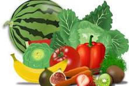
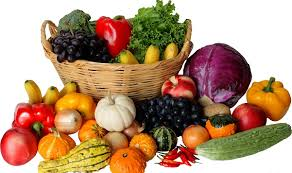

JUDUL
DESKRIPSI
Temukan produk segar dan organik penuh nutrisi untuk penuhi kebutuhan harian. Belanja Sayur dan Buah Segar dengan gratis ongkir sekarang.
Inilah 8 Manfaat Buah dan Sayur
1.Meningkatkan daya ingat.2.Membantu tubuh menjadi lebih sehat.
3.Memperlancar buang air besar.
4.Membuat perasaan lebih bahagia.
5.Meningkatkan daya tahan tubuh.
6.Menjaga kesehatan tulang dan gigi.
7.Menurunkan kolesterol dan melancarkan pencernaan.
untuk memelihara fungsi tubuh secara sehat. Sayuran yang dikonsumsi dengan cukup dapat membantu melindungi tubuh dari segala penyakit.
Makan SAYUR & BUAH Setiap Hari Sangat Penting, Karena
Mengandung vitamin dan mineral, yang mengatur pertumbuhan dan pemeliharaan tubuh. Mengandung serat yang tinggi.
Salah satu alasan penting untuk membeli sayuran segar adalah agar nilai gizi yang terkandung di dalamnya tetap terjaga dengan baik, sebab nutrisi sayuran segar biasanya mulai berkurang saat dipanen. Oleh karena itu, penting sekali untuk memahami cara memilih sayuran yang segar dengan baik.
BELI SAYURAN SEGAR DI MARKET PLEACE KAMI
kontak

Silahkan jika anda berminat hubungi kontak admin yang ada di bawah ini
083******


Follow Me
ig:sitifadilah036